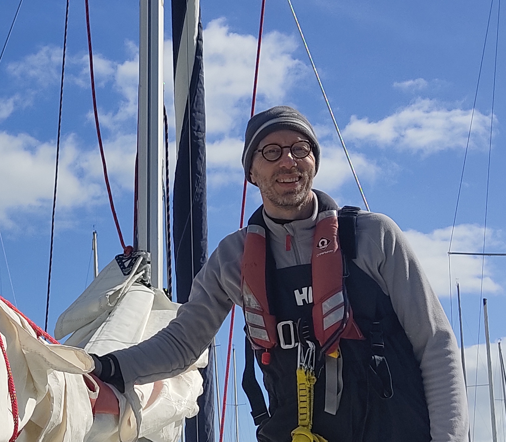

Accompagner les personnes à (re)trouver du sens dans leur vie
☰

Pourquoi ?
Parce que cette activité m’enthousiasme, qu’elle est pleine de sens à mes yeux et que j’ai les compétences pour l’exercer.
Parce que les observations et les échanges que j’ai pu avoir sur ce sujet, mettent en évidence un besoin important (caractérisé par l’isolement, la dépression, le burnout, la violence, la précarité…), chez un nombre croissant de personnes et notamment les jeunes.
Parce que les solutions qui existent déjà peuvent continuer à s’enrichir de compétences et d’énergie.
Parce que mon parcours professionnel incarne ce que je souhaite transmettre.
Parce qu’une personne qui (re)trouve du sens dans sa vie devient contagieuse et fait progresser l’énergie positive de la société.
Comment ?
En proposant des ateliers (en interne ou en externe) personnalisés, concrets, efficaces et cohérents avec la réalité des personnes, pour permettre aux participants :
De trouver et définir un projet qui leur convient.
D’identifier les différentes étapes qui vont jalonner sa réalisation.
De (re)générer la confiance pour les concrétiser.
En accompagnant individuellement et/ou collectivement les personnes pour les soutenir et favoriser la réussite de leurs démarches.
En animant des échanges sur le thème du sens et ce qu’il apporte dans nos vies.
En organisant des activités bienveillantes, personnalisées et encadrées pour (re)générer de l’énergie et de la confiance.
Qui ?
Vous êtes une structure impliquée dans l’insertion professionnelle et vous souhaitez que les personnes que vous recevez puissent choisir des ateliers adaptés à leurs besoins personnels, en faisant appel à un prestataire spécialisé dans le domaine.
Vous êtes un collège ou un lycée et vous souhaitez aider certains jeunes à (re)découvrir leur valeur, pour amener du positif dans le regard qu’ils portent sur leur avenir, en organisant des discussions, débats, ateliers ou activités, animés par une personne extérieure à votre établissement.
Vous êtes des parents et vous sentez que votre enfant est perdu, vous avez du mal à trouver les mots pour le soutenir et l’accompagner dans cette période de doute, et vous aimeriez être accompagnés dans cette démarche.
Vous avez tout simplement pris conscience que le chemin que vous arpentez vous éloigne petit à petit de ce qui est important pour vous et vous souhaitez vous (re)connecter à ce qui est essentiel à vos yeux, sans trop savoir par où commencer.
Les valeurs de la démarche
La bienveillance : Parce que chaque personne est le fruit d'une histoire, qu'elle est la seule à avoir vécue, qu'elle a fait de son mieux à chaque instant pour être la plus heureuse possible, avec les moyens dont elle disposait.
La rigueur : Parce qu'il y a de l'enjeu, et qu'un cadre participe à la protection et à la mise en valeur de son contenu.
L'enthousiasme : Parce qu'il est communicatif et source d'énergie. Sans enthousiasme la démarche n'a plus aucun sens.